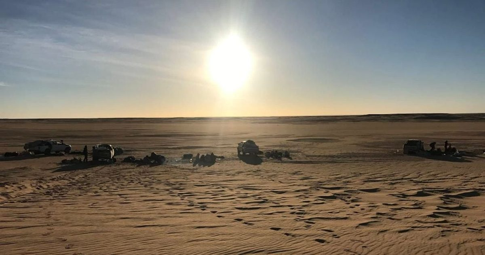

Этот древний метеорит намекает на теплое, влажное прошлое Марса
Древние марсианские метеориты похожи на временные капсулы из прошлого планеты.
Они доставляются нам ударами, которые запускают их в космос, где некоторые из них попадают на Землю.
Один недавно обнаруженный метеорит, найденный в пустыне Сахара, добавляет веса идее о том, что Марс когда-то был теплым и влажным, и, возможно, пригодным для жизни.